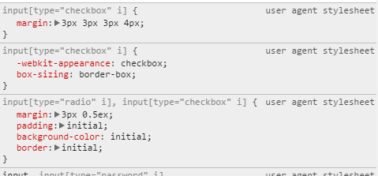

实现
1、结构：用label绑定input，推荐使用label包裹input，以减少不必要的id；
2、样式：隐藏input标签，为label添加背景或使用其他小标签（<i></i>）做出选框的样式；
隐藏input标签的方式有很多种：
-
1) display
display：none；
-
2) visibility
visibility: hidden;
-
3) 透明度
input[type=checkbox] { position: absolute; /* for IE */ filter:alpha(opacity=0); /* CSS3 standard */ opacity:0; width: 18px; height: 18px; } -
4) width
input[type=checkbox] { border: none; padding: 0; width: 0; height: 18px; } - ……
做出样式的方法有很多种：
- 1) 为label添加背景图片；
- 2) :before；
- 3) 简单的样式可以通过添加元素，使用CSS实现。
同时搭配transition、transform等属性实现简单的动画效果。
3、切换：选框样式的切换可以通过 :checked 伪元素来实现(IE8+)， 针对IE8以下浏览器可以通过JS来控制。
demo: 纯CSS实现
更炫的效果
用SVG实现动画效果：Animated Checkboxes and Radio Buttons with SVG
一个SVG动画的js库：Raphael可以兼容到IE6
相关属性
Chrome浏览器，默认的checkbox样式如下：
1、box-sizing (-moz-box-sizing)
以某种特定的方式显示元素，会改变盒模型中元素高宽的计算方式
值：
- 默认值content-box，给定的元素宽高为content的宽高，内边距、边框和外边距会以此为基础扩大；
- border-box你定的宽高就是元素的宽高，内边距和边框会挤压内容区，外边距会以此为基础扩大；
- padding-box。
兼容性：IE8+
是一个还在实验中的用户界面属性。
一个W3School实例IE8的checkbox默认box-sizing为content-box;
Chrome的checkbox默认box-sizing为border-box
MDN相关说明2、appearance (-moz-appearance / -webkit-appearance)
用来实现或者伪装成某些特殊的元素（比如button/checkbox等等）
兼容性：非标准属性，仅Firefox、Safari和Chrome支持，并且在不同浏览器上的表现差异较大
MDN相关说明相关阅读
checkbox复选框的一些深入研究与理解
09年的文章，与其说是内容本身，不如说是研究的思路更值得（喜欢转牛角尖的人）学习参考
09年的文章，与其说是内容本身，不如说是研究的思路更值得（喜欢转牛角尖的人）学习参考